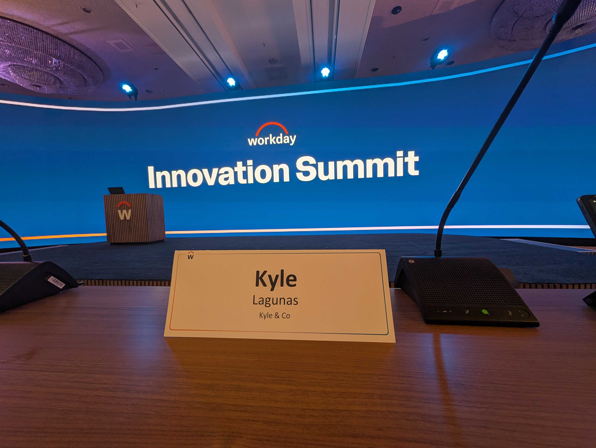
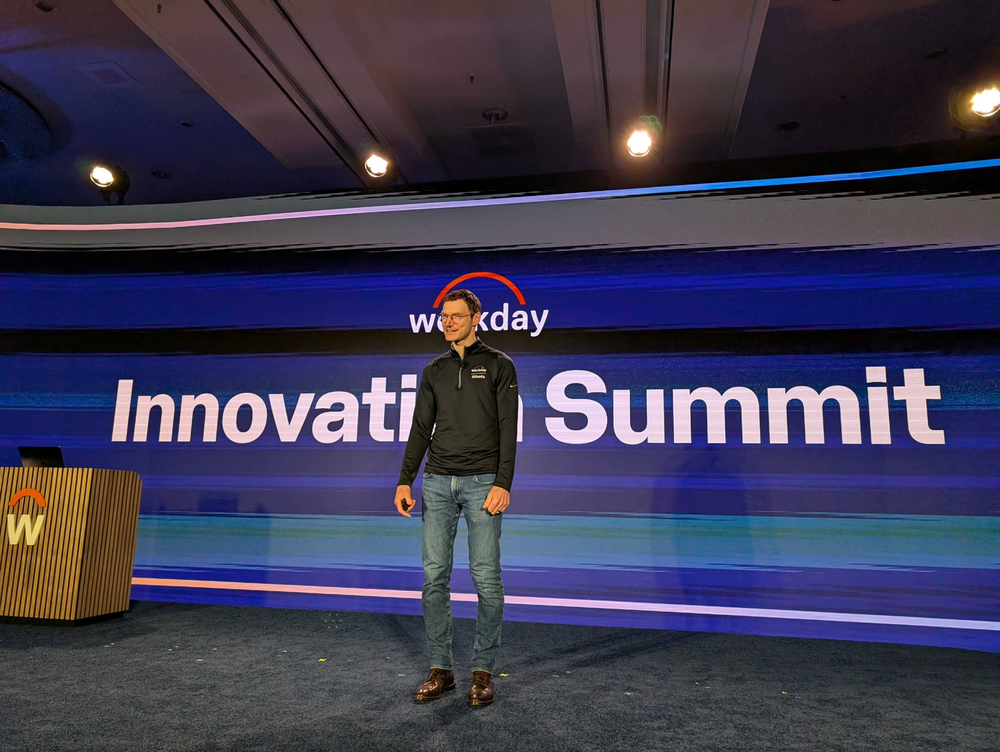
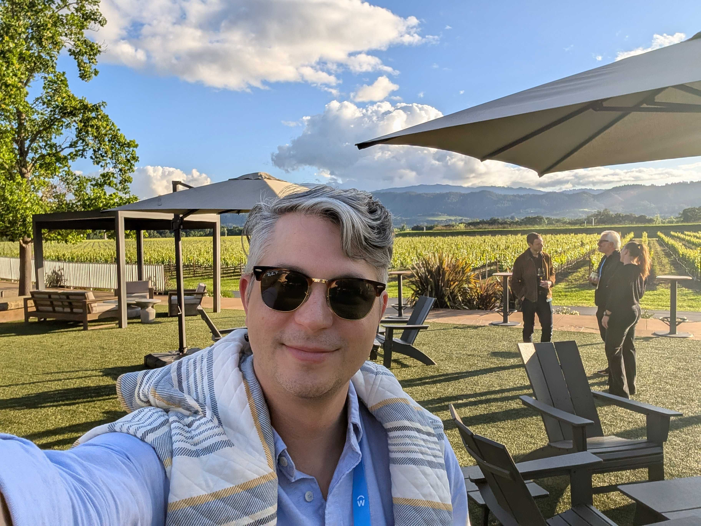
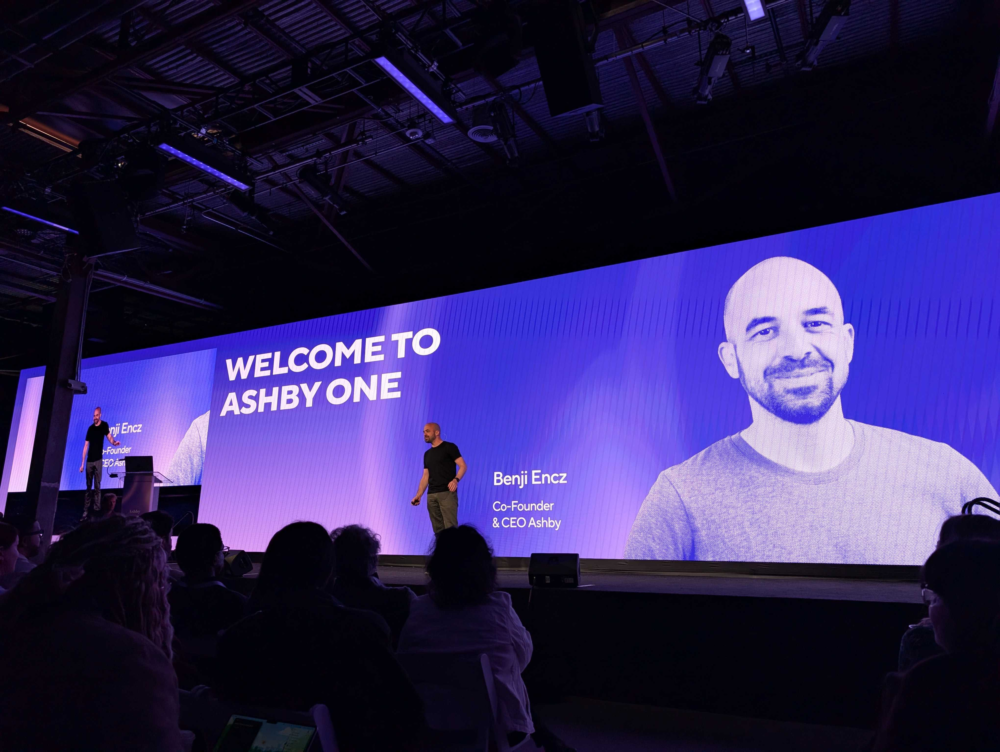

Navigating The Next Chapter in AI:
A New Generation of Leaders Emerge

I have been on the road nonstop this spring.
I'm not complaining — it comes with the territory. Industry analysts get a front row seat to the latest innovations in HR tech and transformation, and this spring has been busy. Launches, summits, acquisitions, briefings, customer events, podcasts… The ecosystem is abuzz.
The big trends are almost all AI-centric: agents, MCPs, and lots and lots of tokens. It's hard to overstate how fast things are evolving — and how much is changing. Every few weeks there's a new capability, a new announcement, a new LinkedIn post about the death of anything that took years to build that can be vibe coded in hours (nevermind scalability, reliability, viability, etc.).
We have clearly entered the next chapter of AI in HR. And here's what I keep coming back to after all of it:
The next chapter of AI in HR won't be defined by what AI can do. It's about who we trust to lead us through to the other side.
Chapter One was a story of efficiency above all. It had to be. Coming out of the COVID-era tech-and-hiring spend frenzy, budgets needed correcting, teams needed right-sizing, businesses needed weather-proofing. For two years, the central question was what can AI do to improve efficiency, to scale operating capacity, to reduce administrative overhead?
And the answers were mostly operational as we aggressively pursued any opportunity to do more with less.
Now the questions are getting harder. More existential. Less about throughput, more about judgment. Less about scale, more about trust. Less about what AI can do, and more about what humans do in an AI-enabled workforce.
No one should be better positioned to answer that question than HR.
And yet — as I've spent the spring with vendors, practitioners, and the members of our Human-Centric AI Council — I'm seeing an ecosystem at an inflection point. AI is not fixing weak processes; it's exposing them. The efficiency story is running out of relevance. And a new question is taking its place: What value can AI actually unlock for HR?
Well… it depends on where we place our bets — and who we trust.
Building Bigger, Faster, Better:
Rethinking Leadership in the AI Era
I don't know how much you've read up on the so-called SaaSpocalypse and the imminent death of Workday… but the infrastructure shift in HR tech is real, and it's worth naming.
MCPs are becoming mainstream — Findem was first with Findem Studio, Ashby announced their own offering at Ashby One (with Greenhouse hot on their heels), and I'm watching others follow. We are moving from isolated AI features to something closer to coordinated AI systems — and I've gotta say… it's really cool. Agentic workflows are real and ready, and soon to be a core component of HR's operational architecture. And the governance of these tools — which I'll be honest, I didn't expect to get excited about — is finally catching up.


At Workday's latest Innovation Summit, while Sana's agentic gave us a lot of sex and sizzle, what really got me was the latest on their Agent System of Record (ASOR). Practical, reliable, scalable… I was honestly blown away. Their approach to AI governance and agent management offers a solution that goes way beyond a novel feature set and veers into what I expect will be a new category — a core part of any enterprise tech stack.
It addresses one of the underlying implications of agentic AI in HR: While the use cases are seemingly infinite — especially when every one of your vendors is building a native builder and/or an MCP — the data they draw on, the processes they support, the policies they reference… it's all extremely sensitive.
HR, Legal, Compliance, Risk, and IT are going to need a lot more than vendors' assurances of safety and security if agentic HR is going anywhere outside of a sandbox. And Workday's ASOR is the most compelling solution to the problem I've seen yet.
Which brings me back to trust.
While everyone is focused on how fast the technology is evolving, a few players are asking the harder question: How do we govern this stuff when it's moving so fast and vibe-coding puts agents in the hands of anyone/everyone? How do we make sure that as AI systems make decisions, take actions, and produce outputs at scale, someone is accountable?
I think about the practitioners I've talked to all spring. The ones running pilots who came back saying, "This didn't just show us where we could be more efficient. It showed us how broken our decision-making process actually was." That's a different kind of insight. And it's the kind that demands deeply thoughtful, adaptive, solution-minded, outcome-oriented leadership willing to learn, grow, and evolve.
The Leaders
Worth Watching
The next chapter of AI in HR — and enterprise more broadly — will require a different kind of leader altogether. I had the pleasure of breaking bread with several of them this spring.
Gerrit Kazmaier, President of Product & Technology at Workday, is one such leader.
He's joined Workday at a pivotal moment: Aneel has stepped back into the CEO seat, and Gerrit is his chosen leader to take the HCM-underdog-turned-ERP-giant into its AI era. No pressure, right?

We're of the same age, but he's already accomplished far more than this humble analyst is likely to. He's a different kind of executive than I'm accustomed to sitting with at these events: less Silicon Valley exuberance and charisma, more German stoicism and intensity.
It's not often I find myself sitting next to one of the most influential people in the industry, but at the end of a long, content-heavy day… we were just two hungry human beings. One glass of wine in, I found myself asking him the real questions. How hard is it to be a leader these days? How does he stay grounded when our minds are so focused on the mountains we're trying to move?
And he told me a story. He's a father — albeit one with a very big job. He was at home, playing with his five-year-old daughter. They were jumping on the trampoline in his backyard. She was laughing, looking up at him, him looking back at her, and he had a moment where everything else just dropped away — where nothing else mattered but the two of them. She was his whole world and he was hers.
The people leading the future of work are still deeply human themselves. They are carrying real weight. The scrutiny is isolating. The hard decisions are taking their toll.
We also talked about how impossible the burden of leadership is to bear by oneself, the importance of having the right team, his late-night pow-wows with Aneel, our shared struggle to be our authentic selves while making complicated decisions. But that moment — a moment I've also had while under immense, nearly crushing pressure, when I was overwhelmed with work stress while my real life was right in front of me — that moment left me with the most important insight from the spring season:
The people leading the future of work are still deeply human themselves. They are carrying real weight. The scrutiny is isolating. The hard decisions are taking their toll. The pressure to innovate responsibly — to not just ship fast but to earn trust — is real in a way it has never been before. And the new generation of leadership was born to meet this moment.
This new generation of industry leaders isn't defined by the size of their company, the incubator they graduated from, or their latest raise. It's not even a generation in the demographic sense. It's a disposition — a new standard for what it means to lead in a moment when everything is accelerating and the stakes for getting it wrong have never been higher.
The next gen leaders I'm watching are emotionally intelligent in public. They're technically credible without being condescending. They're transparent about uncertainty in a way that, counterintuitively, builds more trust than projecting confidence. They're not just building products; they're helping people believe there is still a meaningful place for humans in the future of work.
And they show up. They can have the trampoline moment and then walk back into the building and keep going. Because the work means something.
The Power of Trust:
More than a Moment — A Movement
So by now you're probably thinking I am a total Workday Stan. There's a reason they're my favorite client (strong product, even stronger people leaders), but I'd be remiss if I didn't call out a few other signals I'm tracking from this spring.
I don't think I've ever heard a CEO say, "I love noisy clients." But Benji Encz, Co-Founder and CEO at Ashby, has a POV on the uniquely challenging client base ATS vendors work with that is bullish on exactly that. "They make me work hard — they challenge me and my team to be better and to keep building."

This after he and his team shared several major product innovations — and Ashby's first acquisition — at Ashby One, all of which elicited "Ooh's," "Aah's," and raucous applause. Witnessing firsthand a warehouse full of practitioners reacting not just to new features but to the sense that someone actually built something for them… This immediately set Benji among this new generation of leaders in my mind (and left me feeling like maybe the ATS space is overdue for a Kyle-style market analysis).
I also mentioned Findem earlier — specifically the launch of their MCP (Findem Studio) — but this is another one that has made a real impact on my expectations for AI's Chapter Two.
Hari Kolam, Co-Founder and CEO, and his team have made several major moves that I'm bullish on:
Findem acquired Glider AI — simultaneously securing a significant staffing business (a sector their direct competitors have struggled to maintain) and industry-leading solutions for skills-based hiring and development.
They launched the Findem Authenticity Suite — a more holistic fraud solution than I've seen anywhere. Going beyond technical signals like IP address and email to analyze the content of candidates' profiles, tackling the more nuanced challenge of AI-enhanced resumes vs. wholly fake ones.
They launched the industry's first data labeling engine — converting unstructured and non-standardized datasets into AI-ready, context-rich assets. A power play for a solution provider that remains system-of-record-adjacent, and one that's already opening new doors upstream.
So yeah, lots going on in the industry. I ran out of word count for write-ups of ChartHop's AI Pro launch, Greenhouse's intent to acquire Ezra AI, HireVue's acquisition of HireGuide… the list goes on. And it's showing no signs of slowing down.
While it can be overwhelming, I'm personally feeling both motivated and validated. Motivated to keep leaning in, and getting to the heart of the work that's being done and products that are being built. Validated that the agenda we've set for the next year of the Human-Centric AI Council is exactly what the industry needs at this moment.
I see it in the governance work coming out of Workday. I see it underneath the MCP announcements that, on the surface, look like technical infrastructure but are actually about something bigger: interoperability, accountability, systems that can be governed rather than systems that just run.
I've spent enough springs in this industry to be appropriately skeptical of my own optimism.
But I've also spent this spring with the people who are going to lead the next phase of AI in HR. And I feel genuinely good about where this is going — not just because the technology is impressive, but because I've seen the people who are going to be responsible for it. The ones who are asking the right questions. The ones who are not just chasing what's possible but thinking hard about what's right.
The first chapter of AI in HR asked: What can it do? The next chapter is asking: Who do we trust to lead us through what it changes? I think we're starting to find out.
This is the work of the
Human-Centric AI Council.
A practitioner-powered think tank of senior HR leaders navigating AI transformation together. Year Two starts now.